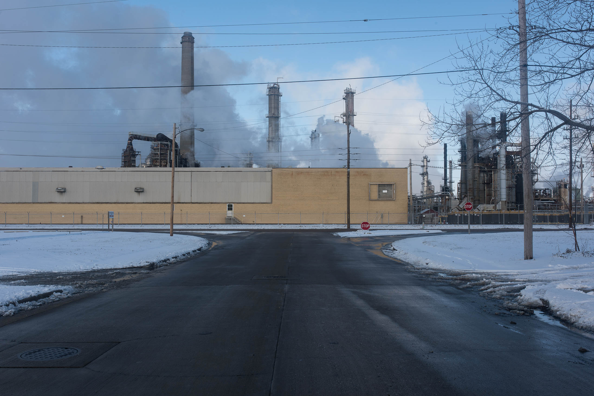

Currently, the Wood River Refinery is one of the largest hubs in the continental pipeline system and the second-largest refinery located away from the Gulf of Mexico. Receiving crude from across the northern United States and southern Canada—primarily through the Keystone Phase 1 and the Kindor Morgan Express—this facility is capable of refining over 360,000 barrels of crude per day.
The present-day Wood River Refinery is not, in fact, located in Wood River at all: rather it is distributed across the municipalities of Roxana, South Roxana, and Hartford, Illinois. This clustering of facilities is still colloquially posited as the Wood River Refinery in tacit acknowledgement of the historic role the original Standard Oil refinery played in bringing this particular industry to the region and its establishment of the City of Wood River. Today facilities are managed by BP, Chevron, and a number of smaller producers.
In a classic case of path dependency, once Standard Oil had scouted and located their refinery at this northern stretch of the American Bottom, numerous petroleum interests were to follow. Shell established its Roxana refinery on a similar model to that of Standard, whereby the company developed the refinery and associated town in tandem. In later years, a whole host of smaller petroleum interests were to follow suit.
Buried 400 feet below the surface of the refinery and floodplain is a series of large butane storage caverns. Carved out of the limestone that forms the bedrock in this stretch of the country, these butane caves were excavated with the express intent of storing four million gallons of liquid butane in earthen storage tanks. The caves were excavated from a single aperture from which all tools, supplies, and personnel were let down, and all gravel and spoils were lifted out. Carved in the room-and-pillar technique common to limestone quarrying throughout the Mississippi and Missouri river valleys, this vast honeycomb cavern system has not been seen by a human for over 60 years. A haunting photograph hanging in the Wood River Refinery Museum carries the suggestive caption of “Last Photo Taken in Butane Caverns,” reminding one of the subterranean inhabitation of this otherwise flat landscape.